Versions up to 02-2004
- Path
- Technical Data > VEHICLE INTRODUCTION > ENGINE CODE, CHASSIS VERSION > Versions up to 02-2004
- Kind
- technical data / specifications
- Applies to
- all engines; all production periods
- Interactive page
- https://sloeber94.github.io/elrnDB-fUlss/en/#/179021615
Applies to: all engines; all production periods
2.0 16V JTD | 2.0 16V JTD C.A. | 2.2 16V JTD | 2.0 16V petrol | 2.0 16V petrol C.A. | |
|---|---|---|---|---|---|
ENGINE CODE | RHW | RHW | 4HW | RFN | RFN |
BODYWORK CODE 5-8 SEATER | 179BXB1A-2A | 179BXB11-1A | 179BXC1A-2A | 179BXA1A-2A | 179BXA11-1A |
BODYWORK CODE 6-7 SEATER | 179AXB1A-2A | 179AXB11-1A | 179AXC1A-2A | 179AXA1A-2A | 179AXA11-1A |
CHASSIS CODE | ZFA179000* | ZFA179000* | ZFA179000* | ZFA179000* | ZFA179000* |
3.0 V6 24V petrol C.A. | |
|---|---|
ENGINE CODE | XFW |
BODYWORK CODE 5-8 SEATER | 179BXD11-2A |
BODYWORK CODE 6-7 SEATER | 179AXD11-2A |
CHASSIS CODE | ZFA179000* |
Applies to: all engines; all production periods
Dismantling
- Secure and support the engine using a hydraulic hoist fitted with chains.
- Unscrew the bolts and remove the exhaust manifold heat shield (rear).
- Undo the fixing nuts and remove the rear exhaust manifold.
- Remove the rear exhaust manifold gasket.
- Unscrew the bolts and remove the exhaust manifold heat shield (front).
- Undo the fixing nuts and remove the front exhaust manifold.
- Remove the rear exhaust manifold gasket.
1. Fit the power unit mounting bracket (1a) at the rear of the exhaust manifold and tighten the fixing bolts (1b).
Description | Code | Function | |
|---|---|---|---|
Pair of brackets | 1.870.889.000 | Fastening engine to rotary stand (exhaust manifold side) |
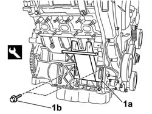
Applies to: all engines; all production periods
1. Use the moving tensioner (1a) and remove the auxiliary units belt (1b).
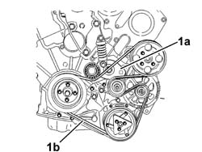
Applies to: all engines; all production periods
- Undo the bolts and remove the power assisted steering pump pulley.
- Undo the bolts and remove the guard on the power assisted steering pump betwen the power assisted steering pump and the alternator.
- Undo the bolt and remove the power assisted steering pump.
- Undo the fixing bolts and remove the alternator.
- Undo the fixing bolts and remove the alternator mounting complete with auxiliary shaft belt tensioner.
- Undo the fixing bolts and remove the starter motor.
1. Fit the power unit mounting bracket (1a) at the front of the exhaust manifold and tighten the fixing bolts (1b).
Description | Code | Function | |
|---|---|---|---|
Pair of brackets | 1.870.889.000 | Fastening engine to rotary stand (oil filter side) |
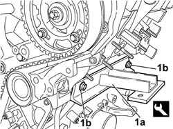
Applies to: all engines; all production periods
1. Place the power unit on the stand and tighten the fixing bolts (1a) to the mounting brackets (1b).
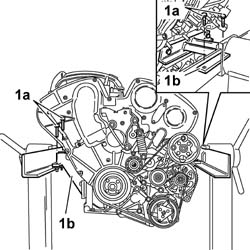
Applies to: all engines; all production periods
Reassembly
- Secure and support the engine using a hydraulic hoist fitted with chains.
- Undo the retaining bolts and remove the mounting brackets from the power unit .
Description | Code | Function | |
|---|---|---|---|
Pair of brackets | 1.870.889.000 | Fastening engine to rotary stand (oil filter side) |
- Position the starter motor and tighten the fixing bolts.
- Position the alternator mounting complete with auxiliary shaft belt tensioner, then tighten the fixing bolts.
- Position the alternator and tighten the retaining bolts.
- Position the power assisted steering pump and tighten the fixing bolt.
- Fit the power assisted steering pump guard and tighten the retaining bolts.
- Fit the power assisted steering pump pulley and tighten the retaining bolts.
1. Fit the auxiliary units single drive belt following the order given.
2. Fit the belt on the crankshaft pulley.
3. End with the tensioner roller.
- Release the tensioner roller support rotating it in an anti-clockwise direction.
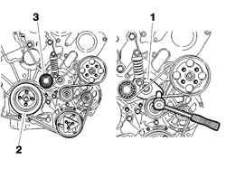
Applies to: all engines; all production periods
- Position the rear exhaust manifold gasket.
1. Position the front exhaust manifold then follow the procedure described below bearing in mind that the tightening order illustrated in the diagram should be followed for each stage.
Value daNm | Fastening | Component | Ø | |
|---|---|---|---|---|
1 | 1 | Nuts | EXHAUST MANIFOLD/S | - |
- Tighten the nuts fixing the exhaust manifold to the recommended torque.
Value daNm | Fastening | Component | Ø | |
|---|---|---|---|---|
1 | 3 | Nuts | EXHAUST MANIFOLD/S | - |
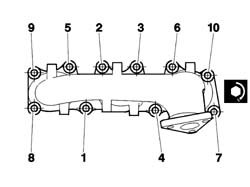
Applies to: all engines; all production periods
1. Position the rear exhaust manifold then follow the procedure described below bearing in mind that the tightening order illustrated in the diagram should be followed for each stage.
Value daNm | Fastening | Component | Ø | |
|---|---|---|---|---|
1 | 1 | Nuts | EXHAUST MANIFOLD/S | - |
- Tighten the nuts fixing the exhaust manifold to the recommended torque.
Value daNm | Fastening | Component | Ø | |
|---|---|---|---|---|
1 | 3 | Nuts | EXHAUST MANIFOLD/S | - |
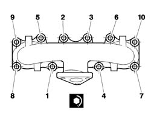
Applies to: all engines; all production periods
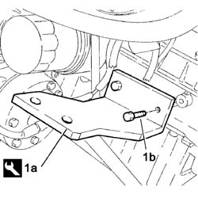
Applies to: all engines; all production periods
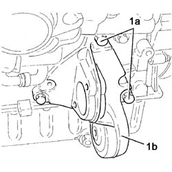
Applies to: all engines; all production periods
Applies to: all engines; all production periods
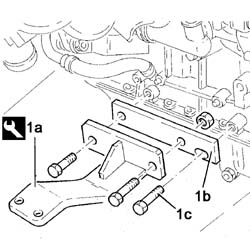
Applies to: all engines; all production periods
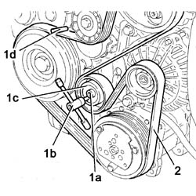
Applies to: all engines; all production periods
Applies to: all engines; all production periods
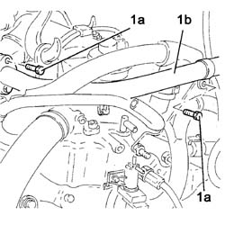
Applies to: all engines; all production periods
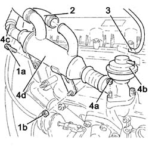
Applies to: all engines; all production periods
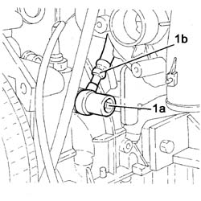
Applies to: all engines; all production periods
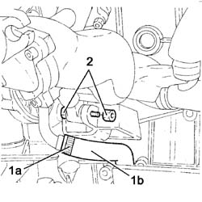
Applies to: all engines; all production periods
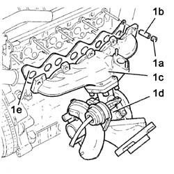
Applies to: all engines; all production periods
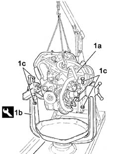
Applies to: all engines; all production periods
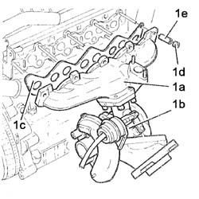
Applies to: all engines; all production periods
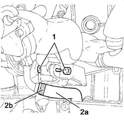
Applies to: all engines; all production periods
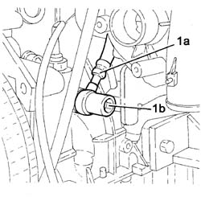
Applies to: all engines; all production periods
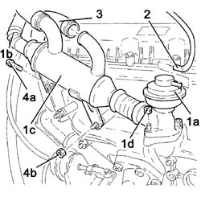
Applies to: all engines; all production periods
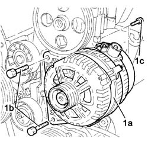
Applies to: all engines; all production periods
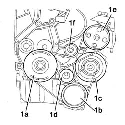
Applies to: all engines; all production periods
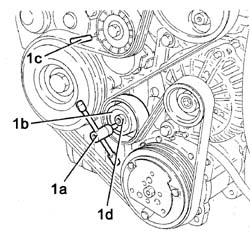
Applies to: all engines; all production periods
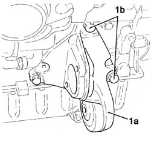